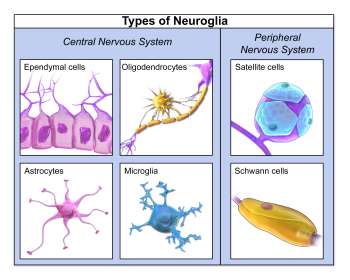

7.3: Stages of Neuronal Development
The brain is made up of neurons and glial cells. Neurons, also called nerve cells, are electrically excitable cells that transmit signals called action potentials to other neurons and are considered the fundamental units of the brain and nervous system (Ludwig et al., 2022). Neurons communicate information about sensations and movement, and process information within the brain. Glial cells, or neuroglia or simply glia, are the other type of cells found in the nervous system. Glial cells are considered support cells and help neurons complete their function for communication. We discuss six main types of glial cells—four in the CNS and two in the PNS. Figure 3 depicts different glial cells and Table 1 defines their common functions.

Glial Cell Types By Location and Function
| CNS Glia | PNS Glia | Function |
| Astrocyte | Satellite cell | Support |
| Oligodendrocyte | Schwann cell | Insulation, myelination |
| Microglia | – | Maintenance of neural networks |
| Ependymal cell | – | Creating cerebrospinal fluid |
Neuron Growth
Neuronal development includes several stages. Once the neural tube has closed, the first stage of neuron growth, known as neural proliferation, begins to occur in the ventricular zone of the neural tube. Neurogenesis, the process of generating new neurons, begins approximately four weeks after conception during embryonic development. This critical phase is marked by a significant proliferation of cells within the neural tube, the precursor structure to the central nervous system. Most neurons in the human telencephalon (i.e., cortex, hippocampus, basal ganglia, etc.) are generated before birth. Extensive neurogenesis does occur after birth in other brain regions like the cerebellum. But all in all, the bulk of neurogenesis (i.e., the 86 billion neurons) in the CNS occurs between the fourth week post-conception to 18 months after birth—during this early developmental period, approximately 4.6 million neurons are generated every hour (Silbereis et al., 2016)!
During neural proliferation, the cells being formed are neural stem cells. There are two basic types of stem cells, pluripotent and totipotent cells. Pluripotent cells can give rise to all cell types that make up the body, whereas multipotent cells are more limited than pluripotent cells. Because pluripotent stem cells can develop into any cell type in the human body, scientists are examining how they can be used in regenerative cell-based treatments for various conditions, including diabetes, spinal cord injuries, and heart disease. In CNS development, neural stem cells are special pluripotent cells that produce only radial glial cells. These radial glial cells then differentiate into neurons and glial cells, forming the central nervous system. This process of neural proliferation generates billions of cells, ultimately developing into the complex structure of the CNS.
Neuronal Migration
Newly formed neurons may remain where they are and continue to divide, or migrate to other parts of the nervous system. Neuronal migration refers to the journey of neurons from their original location to a new target location. For neurons of the central nervous system, neural migration remains within the neural tube; whereas for neurons of the peripheral nervous system, neural migration may occur across different neural regions (Purves et al., 2001). During the migration period, neurons remain immature and lack fundamental neuronal characteristics such as axons and dendrites. Ultimately, neuronal migration is supported by sophisticated molecular and cellular signaling that results in pulling and pushing the immature neuron to its target location.
In general, migration tends to follow an inside-out pattern, where neurons travel from the inside of the neural tube outwards toward their target location. This migration can be classified into two modes: 1) radial migration, and 2) tangential migration. Radial migration, long seen as the primary mode of neuronal movement in the cortex, occurs when neurons are guided by radial glial cells to migrate toward the surface of the brain following the radial pattern of the neural tube and ultimately establish the layered organization of the neocortex (Marin et al., 2003; Wong, 2002). The second mode of neuronal movement, tangential migration, occurs when neurons move to the surface of the central nervous system (or orthogonal to the direction of radial migration). Of note, these two migration methods are not mutually exclusive, as some neurons may alternate from radial to tangential movement along the course of their migration to their target location (Marin et al., 2010).
Neuronal migration occurs through two main mechanisms. Somal translocation involves an extension reaching out from the immature neuron’s soma to lead it to its target; this is used in both radial and tangential migration. Glial-mediated migration, specific to radial migration, involves immature neurons “climbing” along extended glial cells to reach their target locations.
Upon reaching their target locations, immature neurons develop distinct neuronal structures like dendrites and axons, which enable communication with other neurons. This neuronal communication leads to the formation of functional neural circuits.
Aggregation
After migrating, neurons must align and integrate with other neurons to create neural circuits. This is called aggregation. Aggregation is supported by two key mechanisms. Cell-adhesion molecules on cell surfaces recognize and bind to molecules on other cells, enabling cell-to-cell interactions and tissue stabilization (Jaffe et al., 1990; Takeichi, 1988). Additionally, gap junctions form communication channels between adjacent cells, allowing exchange of ions and metabolites such as glucose, which promotes biochemical coupling between the two cells (Mese et al., 2007). These mechanisms facilitate neuronal interactions and integration, ultimately giving rise to the neural circuitry of the human nervous system.
Neuron Death
Neuronal cell death, which refers to the elimination of neurons in the nervous system, occurs extensively during development and actually supports brain development. Neuron death is typically categorized as either apoptosis or necrosis. Apoptosis refers to active, programmed cell death to maintain appropriate development, whereas necrosis refers to passive, accidental cell death resulting from environmental perturbations, such as trauma, toxins, or oxygen depletion (Khalid & Azimpouran, 2023). Apoptosis occurs after neuronal proliferation, selectively eliminating excess and immature neurons to enable proper neuronal connectivity and maturation of functional networks (Hollville et al., 2019). Unlike apoptosis, necrosis is characterized by swelling and rupturing of the cell membrane, as well as leakage of the cellular contents (Rock & Kono, 2008). Necrosis leaves behind disruptive cellular debris, whereas apoptosis efficiently dismantles and “cleans up” the dead neuron, minimizing disruption to surrounding brain tissue. One example of necrosis occurs after a stroke, where disruption of blood flow may lead to accidental cell death. Excessive necrosis is detrimental and is associated with pathologies such as Alzheimer’s and Parkinson’s diseases (Boka et al., 1994; Goel et al., 2022; Tuo et al., 2022). Much work remains to understand and regulate cell death to preserve brain function.
Adult Neurogenesis
Until about 25 years ago, the prevailing view was that new neurons could not be generated in the human brain after birth. However, a landmark study showed that regions of the adult brain, such as the hippocampus, can generate new neurons throughout adulthood (Eriksson et al., 1997). Generating new neurons in the adult brain is referred to as adult neurogenesis. However, adult neurogenesis does not appear to take place in all parts of the brain. Neurogenesis has been most consistently observed in two regions: 1) the subventricular zone of the lateral ventricles and; 2) the subgranular zone in the dentate gyrus of the hippocampus (Ribeiro & Xapelli 2021). Additionally, many neurons generated during adulthood do not survive and cannot integrate into existing neural circuits. While multiple studies have demonstrated evidence of adult neurogenesis, the topic remains fairly controversial. Some studies suggest that 700 new neurons are generated in the adult hippocampus every day, while other studies suggest that adult hippocampal neurogenesis is undetectable or may not exist at all (Sorrel et al., 2018; Spalding et al., 2013). Nonetheless, given the potential clinical implications of new neurons and their possible role in preserving cognitive function, future research will continue exploring the mechanisms that support adult neurogenesis.
Media Attributions
- Blausen_0870_TypesofNeuroglia © Wikiversity.org is licensed under a CC BY (Attribution) license

The fundamental units in the brain that transfer information from the brain to the rest of the body.
Non-neuronal cells that support and insulate neurons. Important for supporting typical brain function and protecting neurons.
The mass production of cells. Most prominent during early embryonic development.
The process by which new neurons are formed in the brain.
Self-renewing cells that ultimately generate neurons or glial cells, which give rise to the entire nervous system.
A long threadlike part of a neuron that carries electrical impulses away from the cell body and to other neurons
A branch-like structure of the neuron that extends from the cell body.
The most common mode of neuronal migration in which neurons migrate in a radial pattern to ultimately establish the different layers of the cortex.
Another mode of neuronal migration in which neurons migrate tangentially and may emerge as a result of interactions with axons, astrocytes, or independent of interactions with other cells. Does not rely on glial cells for migration.
The stage of neuronal development after migration where different classes of neurons coalesce to form different nervous system structures.
A subset of cell surface molecules that are involved in the binding of cells with other cells.
A type of cell junction in which neighboring cells are connected through intercellular channels. Also facilitates the transfer of molecules directly from the cytoplasm of one cell to another cell.
The process of programmed cell death to eliminate unwanted cells.
A form of cell injury which results in premature, unprogrammed cell death due to environmental factors such as injury or disease.
The process in which new neurons are generated in the adult brain.